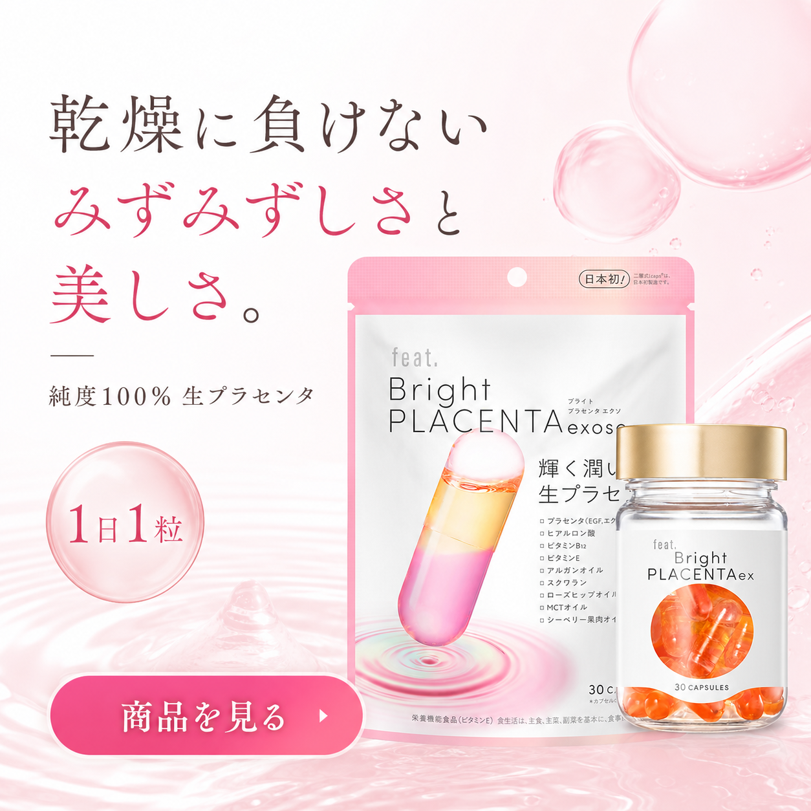
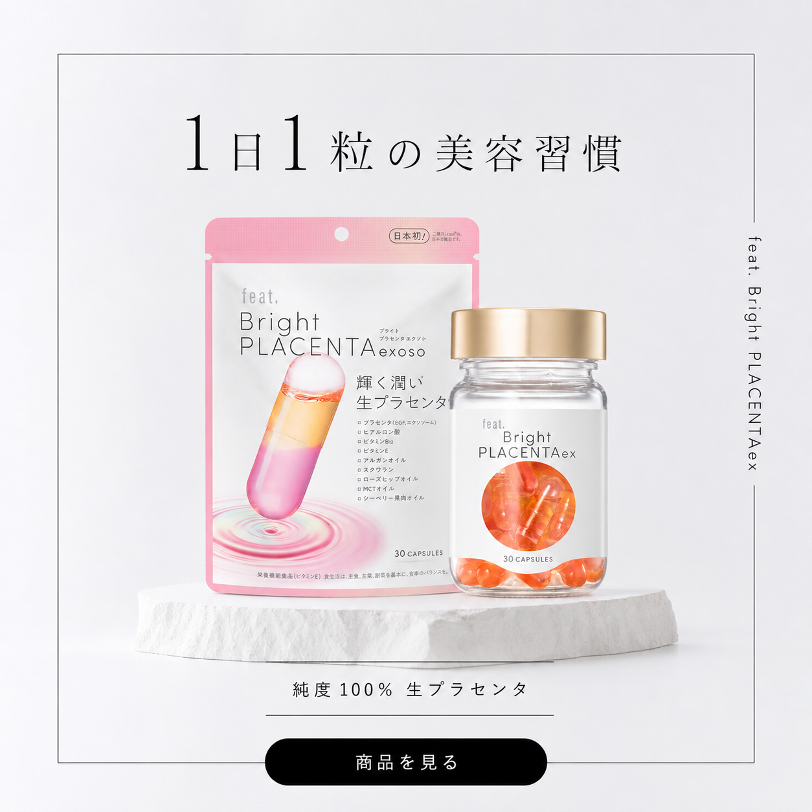
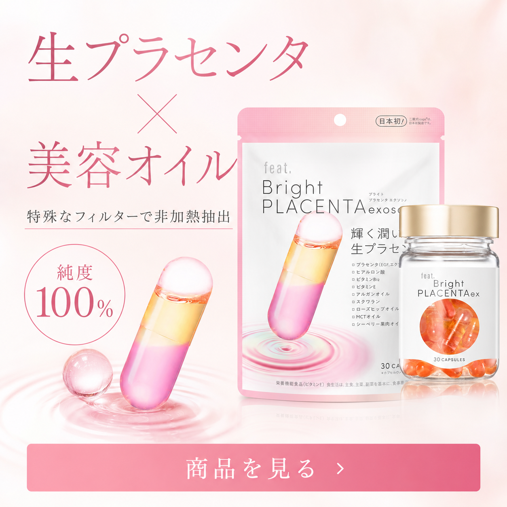

feat._広告用バナー_1:1
入力情報
配信名
feat._広告用バナー_1:1
配信日
2026-07-28
クリエイティブ形式
1:1（1080×1080）
セグメント数
3
配信媒体
Meta / Instagram
読み込んだLP
https://lp.feat-beauty.com/007/商品の価値分解
商品同定：feat. Bright PLACENTAex
本商品は、純度100%の生プラセンタを中心に、美容オイル、PD膜分離による非加熱抽出、1日1粒という続けやすさを組み合わせたインナーケア商品。広告対象は未購入者とし、効果を断定せず「素材への納得」と「毎日に取り入れやすい美容習慣」を明確に伝える設計とする。
LPと提供情報を統合し、価値提案を 機能・体験・情緒 の3層に分解します。
機能的価値
- ✓純度100% 生プラセンタ
- ✓PD膜分離を用いた非加熱抽出
- ✓美容オイルを組み合わせた商品設計
- ✓1日1粒、30日分、3,132円（税込）
体験的価値
- ✓毎日の生活に加えやすい1日1粒
- ✓パッケージから素材と内容量を直感的に確認できる
- ✓悩み・習慣・成分・生活の4つの入口から自分に合う価値を確認できる
情緒的価値
- ✓新しい美容習慣を始める期待感
- ✓素材と製法を理解して選べる納得感
- ✓1日1粒なら無理なく続けられそうという安心感
商品固有の提供要素（差別化レバー）
純度100% 生プラセンタ
広告で最初に認知させる中心素材。商品名と同時に見せ、何の商品かを短時間で理解させる。
PD膜分離・非加熱抽出
比較検討層の納得を支える製法情報。「日本初」を使う場合は指定注記を併記する。
美容オイル配合
生プラセンタとの組み合わせを示し、単一素材ではない商品設計を伝える。
1日1粒
継続負担の小ささを端的に示し、新しいインナーケアを始める心理障壁を下げる。
30日分
内容量を明確にし、購入後の利用期間を具体的に想像できるようにする。
3,132円（税込）
LPで確認できる価格情報。広告では訴求を詰め込まず、必要に応じてLP側で補完する。
広告価値軸（6軸）詳細分解
純度100% 生プラセンタ
機能的価値 / 商品認知の核商品パッケージとLPで「純度100% 生プラセンタ」を主要特徴として提示。
広告を見た瞬間に商品カテゴリーと中心素材を理解でき、詳細を読む理由が生まれる。
プラセンタに関心があるが、商品ごとの違いまでは把握していない未購入者。
「純度100% 生プラセンタ」「生プラセンタを毎日の美容習慣に」
PD膜分離による非加熱抽出
機能的価値 / 製法への納得特殊なフィルターを用い、PD膜分離による非加熱抽出を商品特徴として説明。
素材名だけでなく製法まで確認でき、比較検討時の選択根拠になる。
プラセンタ商品を複数見ており、配合や製法を比較して選びたい情報探索層。
「特殊フィルターで非加熱抽出」「素材と製法を確かめて選ぶ」
美容オイル配合
機能的価値 / 商品設計の広がり生プラセンタに加え、美容オイルを組み合わせた商品として提示。
単一素材だけではない商品設計を理解し、商品への興味を深められる。
美容成分を組み合わせて選ぶことに慣れている、美容情報への関心が高い層。
「生プラセンタ × 美容オイル」「2つの美容素材を一粒に」
1日1粒
体験的価値 / 続けやすさ摂取目安を1日1粒として提示。1商品30日分。
工程の多いケアではなく、今の生活に加える具体的な行動として想像できる。
美容への関心はあるが、手間や継続負担の大きい習慣は避けたい忙しい層。
「1日1粒の美容習慣」「毎日に加えるのは、この一粒」
30日分・3,132円（税込）
経済的価値 / 検討条件の明確さ30日分、3,132円（税込）として販売条件を表示。
内容量と価格を照合し、自分の美容予算に取り入れられるか判断できる。
商品に興味を持ち、内容量や価格を確認して購入可否を決めたい比較検討層。
「30日分」「内容と価格をLPで確認」
美容習慣への接続
情緒的価値 / 自分ごと化1日1粒という利用方法から、日々のインナーケア習慣としての利用場面を想定できる。
購入後の生活を想像し、自分のために新しい美容習慣を始める期待へつながる。
商品スペックよりも、日常や人物への共感から商品を選ぶライフスタイル志向層。
「1日1粒からのインナーケア習慣」「毎日の私に、新しい一粒」
市場・競合文脈
美容サプリ広告では、成分の強調だけでは類似表現になりやすい。本商品は「純度100% 生プラセンタ」「非加熱抽出」という素材・製法の納得と、「1日1粒」という生活への取り入れやすさを分けて検証する。初回接触では1案1メッセージとし、詳細情報はLPで補完する。
ターゲット仮説（広告接触時心理ベース）
※ 年齢だけで分けず、広告接触時にどの問いが反応を生むかで分類。
ターゲット仮説（広告反応・購入動機ベースの3セグメント）
※ 年齢属性ではなく、広告接触時にどの問いが反応を生むかで分類。
NG表現・法務ガード
「乾燥が改善する」「美肌になる」「必ず変化する」などの効果断定は使用しない。「日本初」を強調する場合は「※PD膜分離を用いた非加熱プラセンタ抽出のこと」を併記する。人物の外見を商品の使用結果として見せず、画像内テキスト量は30%以下を目安とする。
◎ペルソナ（インサイト構造化）
価値軸を転用し、3つの購入動機ごとに「心理・課題・訴求」を構造化します。
セグメント① 乾燥悩み・共感層
主軸：悩みへの共感 × 生プラセンタターゲット属性
乾燥や年齢変化を意識し始め、外側のケア以外にも関心がある。プラセンタ商品は知っているが、具体的な商品選びはまだ始めていない。 「今の私にも始めやすい内側の美容習慣はある？」「成分の難しい説明より、まず自分に関係があるか知りたい」
インサイト構造化
- 機能的価値純度100% 生プラセンタを1日1粒で取り入れる商品設計。
- 体験的価値悩みへの共感から入り、難しい情報を読む前に自分ごと化できる。
- 情緒的価値今の自分のために、新しい美容習慣を始める期待感。
主要訴求
1. 乾燥への関心を最初の1秒で自分ごと化
2. 純度100% 生プラセンタで商品を明確化
3. 1日1粒で始める負担を具体化
想定オブジェクション
「乾燥に本当に関係するのか分からない」
「プラセンタ商品の違いが分からない」
「サプリを毎日続けられるか不安」
生成されたクリエイティブ
3枚 ／ 1:1（1080×1080）
キーMessage
乾燥に負けない、みずみずしさと美しさ。
クリエイティブレバー
【 表現レイヤー 】
乾燥への関心を入口にし、透明感のあるピンク背景で自分ごと化を促す。純度100% 生プラセンタと1日1粒を同一画面で示し、感情的な入口と商品理解を両立。
【 ヒーロー構図／デザインレバー 】
- 白〜淡ブルー背景。ダイニングで商品パッケージを確認する美容関心層
- 左上〜中央に大きくキーMessage、下部に「商品を見る」CTA
- 入れる：商品パッケージ・水滴や流体表現・余白・透明感
- 避ける：赤/黒の不安煽り・「必ず安くなる」・年齢変化/効果結果の直接描写

キーMessage
1日1粒の美容習慣
クリエイティブレバー
【 表現レイヤー 】
情報を「1日1粒」に絞り、継続負担の小ささを瞬時に伝える。白とシルバーの余白設計で、商品パッケージを主役にしながら清潔感と品質感を維持。
【 ヒーロー構図／デザインレバー 】
- 白とシルバーの余白で商品と「1日1粒」を主役にする
- 視線移動を抑え、短時間で理解できる情報量に限定
- 入れる：商品パッケージ・1日1粒・純度100%
- 避ける：複数メッセージ・過剰な装飾・効果結果の表現

キーMessage
生プラセンタ × 美容オイル
クリエイティブレバー
【 表現レイヤー 】
生プラセンタ、美容オイル、非加熱抽出を一画面で示し、成分や製法を比較する層の納得を形成。情報量が多いため、小さい表示面での可読性と注記の確認が必要。
【 ヒーロー構図／デザインレバー 】
- 青と白基調の落ち着いた検討シーン。成分確認手続きガイドを確認
- 使用後の効果結果は描かず、素材・製法・商品を中心に構成
- 入れる：商品パッケージ・カプセル・純度100%・非加熱抽出
- 避ける：病床/効果結果現場・「必ず美しくなる」・過度な不安煽り
1:1広告 共通設計